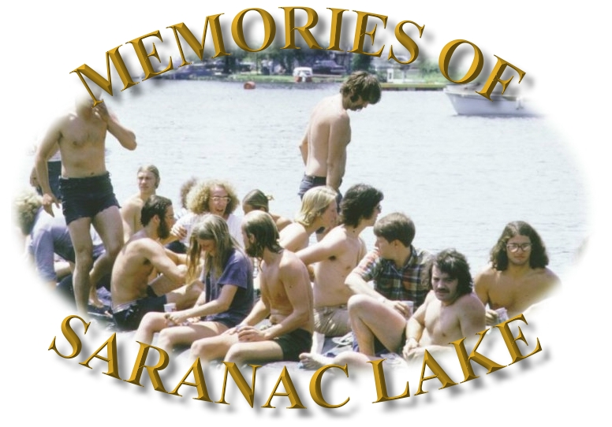
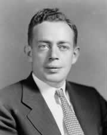

My parents were the owners of Chip’s Cedar Post until the restaurant was sold to the owners of Loons (I think that was the name). Anyway, there were 2 families with 10 children that used to make 2 week trips up to my grandparents after we moved two times a summer until the kids got old enough to work. Those summers spent at my Grandparents, fishing on Oseetah Lake all hours of the day, the many trips to Blue Line in search of that summers secret lure, and the night trips to Lake Placid and Saranac Lake in search of some fun and adventure.
After the sale of the restaurant, my family had a difficult time getting back on their feet financially, but nothing held us down so long as we had our time in Saranac Lake with our family. We made it a tradition of getting out of the car once we finally reached the dirt road, the last stretch to a 7 hour drive, and we would run the rest of the way while my parents tailed behind, and then we would all count down the final 10 seconds of the trip out loud so my Grandparents would hear us coming – there will never be another place that defines home for me as Saranac Lake did – and there is no breathe of fresh air like your first breathe of that mountain air!
P.S. On July 3, 2010 a Baker Street /Park Avenue neighborhood reunion was held as Jim Clark, Gary Nelson, Don Stunzi, Dennis Bristol, and Kathy Bailey spent the afternoon taking pictures and walking from house to house reminiscing about who lived at each house. Almost 50 years later we recalled numerous events from the “old neighborhood” when life was so carefree.
Standing on line at the Pontiac to see the movie Woodstock. The line went all around the block half way to the library. Mr. Downs was our bus driver, he kicked us off the bus more than once and had us walk home. Today, he'd be up on charges. Colleen Reed and I rode our bikes around Moody Pond in the dark after a stop at the Alpine, I almost killed myself going over the railroad tracks and popping my tire. She laughed hysterically pushing both our bikes and helping me limp home. I never forgave her for laughing. Denise Gladd and I would cruise up and down the main drag playing the same old 8 track Steely Dan over and over. It's the only album I know all the words to. My cousin, Jane Pelligrini, a few years back was at the Pepsi Arena, now known as the Times Union Center, in Albany, and met up with Lyle Branch and Bob Richter. They recognized each other, can you imagine. I believe they both live in Albany or nearby. I don't think anyone I would know lives in Ballston Spa. I've lived here 25 years and I don't fel like I'm from here, I am from France. Duh. The Coneheads, get it? Good Bye and Good Luck.
My dad worked for the railroad and he always made it a point to take us up for a week at first, then 2 weeks, then we usually stayed 3 wks at Pauls camps(now owned by cochrans)on Kiwassa Road. We rented a cabin with no electricity, just gas lamps and a wood cook stove and loved it. Our biggest highlight was Dew Drop Morgan's every Sat night for spaghetti dinners and Shirley Temples!
Some nights we would stay by the campfire and roast marshmallows and tell scary bear stories while the parents would go into town and have cocktails at Little Joe's or the Hotel Saranac on their night out without 5 kids. Those were the days! None better --- ever!
My parents had little money to spend on vacation but we always managed to have a super time with less. Hot dogs, salads, marshmallows, corn on the cob and beans we lived on! Those were the days! My dad sometimes would take us to the A & W Rootbeer at the entrance of Whiteface Mt. I think it was for a treat and our favorite place was Mountain Mist and Donnelly's --- to die for!!! I can taste it now!!!Soooooooo good! Creamy!!
I remember the nights mom and dad would go out and fish on Kiwassa Lake for their big northern pike! We would sit on the dock and wave goodbye. I could go on and on but,wow, my parents gave us memories no one can take away! Ever! We keep saying we need to do a family reunion and walk the Main St of saranac lake - god willing! We love the Adirondacks and the people who live there - couldn't ask for finer!
God bless them all!
About 10 years ago, I was idly reading an article in the NY Times about the coming auction of Einstein's love letters to a Soviet woman spy. The article said she was Madame Kenekova, who was renowned for her flaming red hair. They were going to try to auction off the letters at Sotheby's. My action was: 'HOLY SHIT! THAT WAS THE WOMAN I WAS TALKING WITH FOR AN HOUR."
Indeed it was, and the true story is that she was not a "spy" in the usual sense. The Soviet gov. was desperate to have the U.S. be friendly after the war ended. Her job was to become Einstein's lover (with her husband's permission) in order that he would be more favorably disposed toward the Russians. This made sense, because Einstein was always a womanizer. I used to see him a lot, and one time helped him into his sailboat. His favorite pastime was playing his violin in the boat, out in the middle of the lake. One time he capsized, and got picked up by a Saranac kid. He also used to sail with Frank Kawatch, who was the projectionist at the Pontiac Theater. My family lived over the Kawatches. One time, Einstein and Frank got becalmed on Middle Saranac. They were towed back in by Ed Lamy. Now imagine that! The great Einstein being towed in by the world's champion barrel jumper!!
Finally, I lost my job at Knollwood before the summer was over because I was jumping of the roof of the boathouse, using a beach umbrella for a parachute. I was fired by Mama Bloomingdale (the family matriarch) herself. Thought you might like these true stories.
Phil wasn't the only one jumping off the roof of the boathouse "using a beach umbrella for a parachute." I joined him in that aventuresome sport. But Mrs. Bloomingdale, actually a very kind lady, couldn't fire me because I was her neighbor in good standing!
By the way, I didn't meet Madame Kenekova. As for Einstein, in 1936 my sister, the late Florence Billikopf Schweitzer, was invited by Einstein to join his party when they drove up Whiteface Mountain, and in 1944 invited by Einstein for a ride in his sailboat. Somewhere I have a photograph of them - with Einstein's sister - preparing for the sail.
Miss Helen Dukas, Einstein's secretary and housekeeper, used to stand on a rock below their "cottage" and gaze out over the lake. One day I asked her what she was looking for. "I'm looking to see when the Professor comes into sight on his return from his sail so that I know when to put his baked potato in the oven."
One day Einstein came to our house, next door, for lunch. My father who was aware that the Professor was on a diet informed Einstein that there would be ice cream for dessert. "Can you eat it?" asked my father. "I'll have to consult my doctor," answered the Professor. My father had a worried look on his face. He hated the idea of his guest phoning to Princeton…on his, my father's, phone. "Who is your doctor?" asked my father. "I'm my own doctor," answered Einstein, "and I say that I can have ice cream"…and burst out laughing. I still remember that lunch after 66 years!



When the state came through in the 1970s and tore down all the cabins and burned them up, my aunt got a houseboat and along with tents on shore we continued to camp at Lower Saranac most of the summers. It was only after my grandparents got too old to go that I missed a few years on Lower Saranac. Now I only get to reserve a campsite for two weeks. My wife and kids come up with me (we live in Connecticut) for one of those weeks. I wish it was possible for them to be there longer so they could have a lot of the same memories as I have. I hope the memories they will have will be good ones. I was dreading the day that condos would go up at Ampersand Bay or Crescent Bay and that day has come, so now there's no more rooms to rent over the old boathouse.
The town has changed a lot in my 45 years, but the lake
and islands haven't changed nearly as much (a little more crowded and
bigger, faster boats). The first time I brought my wife camping there
before we got married, I told her to pack her winter coat and lots of
warm clothes. She thought I was crazy because it was the middle of the
summer...
Here's a few links to pics at Lower and Middle Saranac:
www.foremostengineering.com/pontoon
www.foremostengineering.com/submarine
www.foremostengineering.com/seaark
www.foremostengineering.com/boat/mirrocraft
I remember living at 4 Fawn Street, and a Broadway address that was on the second floor next to a gas station that recapped tires and across the street from a tire shop, a distance out of town. Dutra's (sp.?) deli and store was located the same block. I remember a little man named Eddie that used to do odd jobs and errands for people …. he drove a pickup truck.
I started school at the River Street school and I remember a teacher named Miss Starr …. my experience there was not good and I was transferred to St. Bernard's. I remember two priests, Fr. McFadden, and Fr. Wiley. Keogh's Funeral home was across the street from the church.
As someone else mentioned, I too, hung around the railroad station. I remember getting free rides, on Saturday, to Lake Clear Junction (???), the end of the line. I think the Pisgah skiing facility had just been built. I remember when the Stop and Shop, or maybe A&P got burned out.
The Trail way's bus's came into the Hotel Saranac, and the hotel that was kitty-corner from it had the only TV in town …. very poor reception … and only turned on for the Saturday night fights (Cavalcade of Sports)
As I said, as a youngster, I made a few trips back to stay with families that "I adopted". Bob and Nan Dorey, and son Ron., the McNamara's, Bruce and Kattey. I remember the "Teen" dances, Police Chief Bill Wallace, and Mike's Special, Pontiac Theatre, the Dew Drop Inn, Saraplacid Drive in, … the name Pat Latour means something to me … maybe bobsleds?
I remember seeing Judy Collins at the Ice Palace in Lake Placid and actually had a conversation with her about that, one night in Harvard Square in Cambridge MA.
Last time I went back, maybe eight years ago, I remember dragging my wife to a hot dog stand and having Michigan Hot Dogs. God I love those. Please send the recipe.
The first time I went swimming at Lake Flower, I can still see my Mom sitting there with me. Going to the Dew Drop in for Pizza with my parents and special moments shared at the Belvedere eating spaghetti and those huge meatballs with my daddy. My first beer at the Waterhole. Feeding the ducks off the bridge on main street. Oh, lets not forget about those long cold morning winter walks trying to get up that hill to the high school overpass. ( I can't remember the name of the street). Riding my bike through town, Newberry's and Donnelly's for Ice cream with my big brother Dick DeNicolo. 1,000 Animals Farm near Lake Placid and watching the bears on their posts. Santas Village as a young child. Ice skating in placid at the arena and my most ultimate pizza place in Placid – MR MIKES ! I never miss a white pizza when I get the rare chance to come home.
Saranac Lake will always be in my heart and soul.
In all the years I lived there, I only saw the Northern lights once, Aurora Borialis. Remember the sonic booms, military aircraft breaking the sound barrier? Haven't heard that in years. I guess they can't do that over populated areas anymore. Bizarre. When I moved from the Bronx to Saranac, it was like being paroled. We use to explore the old Ford garage on Upper Broadway until it collapsed under the snow one year. Well's candy store, use to go there a lot. Years later my dad bought Walsh's and re-opened it at a different location after he sold E Johns, which became the Rusty Nail. I lived there less than 8 years but have a lot of memories. I recently found schoolmates from my old catholic school in the Bronx. Funny, I remember some of them too.
Pete Higgins Store was our resource center....those big Italian Sauages in the jar for a dime, next to the jar of jaw breakers,(go together like bat and ball), and of course all the post cards in the candy display case showing huge trout ripping the legs off of innocent fishermen all added to our bitter sweet appetites.
I was always a bit envious of Steve and Mike Morgan cause they lived closer to Pete's store and had first shot on the newest batch of Topps Bubble Gum base ball cards of Mickey Mantle, Willie Mays,etc. and had so many we used them in the spokes of our bike wheels to facimillate the glass packs (mufflers) of The 50's hot rods.
--
sft1951@roadrunner.com
A few left the ranks and ran up off the School Grounds but only one in our class did; Clyde Baker, who was taking up the flute after passing a tryout in our sixth grade homeroom. (Mrs Pattinson's)
Just thought someone else would also remember this occurance.
I don't go back often. When I do I rue the changes. The beach on Lake Flower should never have been moved to Lake Colby...what were they thinking?! Did a few blood suckers chase them away? What WAS the name of that little restaurant just up the street where the river boat (paddle boat) was?
There was a little store/diner where the bank is in front of the River St. School...I used to stop there on weekends. Saturdays I went to Madden's auctions. Right across from Miss Starr's house.
We used to walk up to Quesnells....the mountain lion had one eye...walk through RL Stevenson's cottage.
Then we grew up....bloody marys at Hotel Saranac on Sunday am while Benny and the Jets played on the juke box. What was the earliest name of the restaurant on Berkeley Square....Ruth's diner? can't remember, but I loved their pizza burgers. Remember we had open campus and lunch was always downtown.
And how many bars could you hit on a Sat. night. Ye gads! From the sub shop or pizza joint down to the Waterhole we must have had 20. I still remember streaking through one of them. Ahh...memories.
I have enjoyed reliving them all, because many of them also belong to me. What is that great pull that keeps us connected? Saranac Lake was a fun place to grow up...we remember the innocence of being able to go anywhere as long as we were home by lunch and again by dinner.
Thanks for the memories ....keep them coming.
We would eat at the little diner across the street (Miss Saranac Diner) for breakfast and sometimes go to the Dew Drop Inn for dinner. I remember feeding the ducks as we ate as there was a porch with open windows. When I was a very young teenager I would put a lounge chair on the bowling alley roof outside the sun porch window. This didn't last very long as soon I was spotted and just made it inside the salon as three young teens were climbing up onto the roof. I never tried sunbathing there again.
I also spent a lot of time on the Lake Flower beach with some friends I had made before the new road was put in. One friend I made was Mary Buckley and she and I climbed Mt. Baker one day. It is the only mountain I ever climbed. The memories I have of Saranac Lake and Stony Wold are the best childhood memories I have. I still visit in the summers and even go back to Stony Wold which is basically wilderness now except for the Chapel and a couple of houses. I have fond memories of Stony Wold when the sanitarium was there. The grounds were beautiful and I especially remember the Bishop Fulton Sheen giving a talk when the White Fathers took over Stony Wold and the sanitarium became a seminary.
My Mom, Marion Turner Slocum graduated from Saranac High School but also attended the little one room school house that stood between Stony Wold and Saranac Lake when she was a child. We also used to visit my Aunt Mae Hyrup in Onchiota. My Mom and Aunt Mae are still alive. Aunt Mae is 105 years old and is in a nursing home in Lake Placid.
The skate house was kept warm with a large wood-burning stove, kept cherry hot by Mr. Bedore, Bing Kunath and a few other good men. The coke machine was just able to keep the cokes from freezing, yummy. There was, on occasion, a griddle for hot dogs and hamburgs. It didn't get any better.
Although the afternoon skating was great, the evening skating was even better. After rushing home to be on time for dinner, there was the mad dash back to the rink, (after homework, of course), Then the magic began. You were out after dark and you might even see that someone You had a crush on. Of course you didn't greet that someone,you just sort of buzzed that person or bumped into her, sort of accidentaly of course.
There was never a shortage kids to play snap the whip, or large snow banks to jump over, and there was always someone who thought he was faster than you. Race time!!!! Forget about frostbite and corduroy pants that froze and made the most embarresing noise when you moved or buckle boots that you would never buckle, way to uncool.
If you were lucky, you could get to walk your favorite girl,(for that week), home. Never mind that she lived on the other side of town. The walk home was always exciting under cold crisp star lit nights and there was always tomorrow.
Your friend,
My Father, Doc Gautreau, managed the (Saranac Lake) Red Sox baseball team, first as a player/manager until he broke his leg in St. Albans, August 1938. The players were college age, several were scouted by the major leagues.
We traveled to the games by car, singing and playing mind-games. A favorite restaurant was Patsies. The team had free passes to the movies. There was a cobbler on a corner, across from the Saranac Hotel....a St. Bernard blocked the entrance, had to step over this friendly dog. People SO enjoyed the games, always a good turnout.
We lived in the apartment house by the lake in town; I learned to dive in that lake...Flower Lake ? We also lived in the apartment across the street from the hotel, I well remember the Sagendorf family....also the Hunts, Delahants (Tony) , Jean Hutchins, and the town manager. People were very kind to us. The ballplayers lived in a rooming house adjacent to the old park. At Woolworth's I enjoyed ice cream sodas, 15 cents !
Doc died in 1970 at age 69, my Mother, Sue, died in 1995 at age 91....I'M 78 ! Could not resist sharing some fond memories.
In 1936, Doc Gautreau, former Philadelphia Athletics and then Boston Braves second baseman was named skipper of the Saranac Lake Red Sox. Walter Paul "Doc" Gautreau was also Montreal Royals/player-manager, Sherbrooke QU/manager, Montpelier, VT, manager; Norton Co, Worcester, MA/manager, Hudson High School, MA ., coach/athletic director. Boston Braves scout, California Angels scout.
An outstanding college career at Holy Cross had made Doc Gautreau a popular figure in Boston, even though he never achieved major league stardom. When Boston fans gave the Braves second baseman a “Day,” he responded by tying a Major League record.
On September 3, 1927, the Beantown fans awarded him a car on “Hogan/Gautreau Day.” (Shanty Hogan, Boston catcher, was also honored that afternoon.) Doc acknowledged the gift by stealing home twice and also scoring on a hit, accounting for three of Boston’s four runs in a 4-3 victory. The two steals of home tied a Major League record, and would not occur again until 1958.

I moved to Saranac Lake when I was 12, my father bought E Johns along with my Uncle Tony Pelligirini, at the time he owned the Sara- Placid Drive In and Twin Flavors. I completed HS there and went to NCCC Program of Practical Nursing in Malone. I moved to Ca. in 1976. I was actually married there in 1977. We eventually moved back to NY in 1985.I have no roots left in Saranac, every one moved away. We were never actually from there. You can imagine moving from the Bronx to Upstate. Culture shock but I was only 12.It's all my little sister remembers, she was only a baby when we moved.She went to St. Bernard's etc.Pius was closed by then.
I saw the picture of Mr. Bert Dorsch. I still keep in contact with his daughters Robin and Terri. My favorite teacher was Mrs McKillip, she was 8th grade math, she helped me catch up. Believe it or not, I was behind in mathskills, even though I went to Catholic school in the city.
Anyway, this is agreat site, even though no one remembers me. That's OK, I was never one of the popular crowd. I remember most of the names, Shannon, Billy Allen, the Morgans.none of them ever talked to me in HS, but that's OK, it doesn't matter any more.I remember them, they stood out in my memories, for the things they did or acomplished.
I think I turned out to be a decent person and raised three great kids, one who recently returned after 8 months in Iraq with the Special Ops.I would love to hear from any of you that are that my era. I am 50 now, jeez, where did the time go??? Hello to all of you and God Bless, The class of 73 rules and so do the Redskins!!!!!!!!!!!!
I've stayed in touch with some of the kids I graduated with but would like to hear from more of them.
I grew up in Saranac Lake and have a lot of great childhood memories, one of which is Tom's little animal farm. That man used to let us kids follow him around asking ten million questions and he never lost his cool. I used to get back HOME every Christmas and never missed a year until my mother passed away. Christmas is not the same on Long Island as it is UPSTATE.
If anyone remembers Tom's, which we all should, who used to hang out up there, please post me an email.
1968 graduate and ex AMA employee who left home for the BIG CITY and wishes she was back in Gods country. Saranac Lake will always be HOME to me.
I was born in Saranac Lake in 1927 we lived at 161 Broadway. We lived in Saranac Lake until December 1940, I was half way through 8th Grade at the time. We moved to the Black River, NY are as my Father got a job helping to build Pine Camp just before WWII. My brother Jim "Hambone" Ambrose stayed there to graduate with the Class of 1941. He played Football at Half Back first string and also played Baritone in the HS Band under Oliver J Stansford. He stayed with our Uncle Curly Branch and Aunt Alma who lived on Lake Street at that time. I started school in September 1932 in first grade.
My teachers name was Mrs Stevens, in second it was Mrs. Ellis, in the third it was Miss Brunnet, in the fourth it was Mrs, . Kennedy, in fifth (She kept me back not because of Academics but, as she said to me, I was not ready for sixth grade it was Miss Fairbanks and of course sixth grade was Mrs Pattinson. My homeroom teacher in the seventh was Mrs Stone and in the eighth, the last year I was there it was Mrs Thomas, a very very mean lady.....If there is anyone who might have remembered me in those days I would appreciate hearing from you.
We spent most of our life in the French Hill section living in many places including Prospect Ave, Mc Comb St, William St, Neil St, Charles St Ampersand Ave and even up on Alagonquin Ave and James St. As the old saying goes we moved every time the RENT was due. The people I remember most who were my friends were the Robedeau Family, the Cross Family the Sullivan Family all from Neil St, The Swinyers, the Stearn's, Wally Gay, the Darrahs, Tete and Franny, Loco La Prade, George Hess, and a few others.
Does anyone out there know if there are photos of classes I mentioned above, I don't think they took class pictures back then like they do today.
Again..you have an excellent website keep up the good work......
I'm back home after being away for 20 some years and some things have changed and some things remain the same. At every corner you can hear the voices of old friends, the laughter of the children we were, and the joy comes flooding back.
I remember....the piece of bubblegum I took and Mom marching me back to apologize and pay for it, what is pay? ....the cream my Grandmother poured off the top of the milk for MY cereal....riding the last passenger train on a school outing....the day someone threw up in Mrs. P. LaValley's room....Flunking the 5th grade! I still hate that teacher!....the Sidney Poirtier premiere, I got his autograph,wish I still had it....the Pontiac Theatre....WNBZ Saturday morning request show....Skippin' school to watch the soaps,Y&R....Petrova rink,day after day, night after night....Sweetheart Sundaes at the Altamont....hangin' out at the "Arcade"....Snow up to your....July 4th parade, in my parka,snowing!....The "little Redskin ribbons with the gold football hanging from it" pins....Picking out clothes for my Mom at Altmans, 4 doors to 4 floors of fine feminine fashion....Beers on Mr. Dewey's Hill....The guys from PSC, Hiram, Dudley, Gronk, and the infamous Edward Rodgers JOSEPH "Beast" "Deacon" Bauer the 1st.....Riding the AMA float as Dorothy(Oz) at 25 below zero, in a dress....Dear Diary, saddle shoes, bell-bottoms and P-coats, French Hill, and losing Jenny, it goes on and on. We had a great childhood, all of us, Saranac Lake was and still is a pretty good place to grow up in, and if I close my eyes, (so as not to have to look in the mirror) I could almost be that kid again..........
Mine got broken when it got home and the tears were the worst. My mom brought me to the teachers house where she had been kind enough to make me another. Since that day the ornament has been one of my most cherished gifts, every year coming out first and going away last. It gives the warmest feeling of love from a teacher that cared so for her students.
Santa's Juke Box in Berkley Square, the rink at Petrova and George Bedore, above and beyond care of that rink. Swimming on River Street, the parades, the playground at the railroad station (I was queen in 1956). Charlie Green, Pop Walsh and his penny candy, Bernie Wilsons soda pop, Altamont for ice cream and Mr. Dickies restaurant, and oh yes, the Belvedere for pasta.
So much to remember and all of them bring warm feelings of having lived in the most wonderful place on earth. I tell my husband take me to where I can see my "mountains" that engulf you no matter which direction you look.
Blessings and Happy New Year to all.
It was great visiting your site and seeing old friends/acquaintances. I miss the town and the people. Life has changed from the beautiful Adirondack Mountains to the Colorado Rockies. Working for Standard & Poor's in Denver is a long way from my first job working as a keypunch operator at AMA. I haven't seen Sid Cole since my days working at Trudeau Institute.
I would love to hear from some of my classmates!!
I had some great times in Saranac Lake, and bad times as well it goes with out saying I graduated in 1973. AND YES I'M PROUD I WAS A DAMN REDSKIN. Football was what I lived for then.And going up the Lakes to hunt or fish. One of your letters talks of the walk from the high school to the football field. All in uniform psyching ourselves up all the way.It saddens me that these so called politically correct wacko, wimps had to change the name to Redstorm. Oh well what can you do?
So many things in Saranac Lake have changed. Gone is the great old beach. Gone the movie theater. Gone the Altamont, and even Newberries. Sigh a complete lunch for under a dollar. And let us not forget GAS AT cough cough $.29 a gallon. That that makes you want to cry. Going down to Dukes for records.
My Dad had one of the first Pizzerias and arcades in town. The Broadway Pizzeria.I hope Saranac Lake starts to get some development going soon. I hate to see the town dying like it is. There isn't much left. It's still a beautiful place to go, but there isn't much to draw you there anymore.Unless there is some event going on. Shopping is either in Tupper Lake now or all the way to Plattsburgh. What a shame.
One good thing I came away from SL with is my wife, also born and raised here. She Graduated in 1974 from SLHS. I became a Paramedic in 1977 and we moved around the country a lot, Buffalo, Rochester, Houston TX, even Pennsylvania Nothing is like our Mountains. 10 years ago we moved back home. Well all most home. We make our home in Tupper Lake now. My Grandson now goes to Petrova in SL. I think he'll be the next athlete from my family. My name, I don't mind it being posted. Hell I didn't care what anyone thought about me back then so why now. LOL. Anyone wanting to drop me line feel free.
EXCEPT YOU WIMPS THAT TOOK OUR TEAM NAME, LOL Special Hi to Class of 1973 and 74, and to Old Coach Raymond, Plumadore, and Morgan. Hey Mike remember the boat rides buddy. LOL
Like so many others, where do the memories begin?
Yes, I was born in Saranac Lake! Proud of it too! Oh, by the way, my name is Nancy Walsh born Sept. 13th, 1955. To start it off, my Great Grandfather was POP Walsh at Walsh's Cigar
Store and My Grandfather was Francis Walsh,Sr. and my Father, Francis Walsh, Jr.
It surprises me that I guess things happen for a reason? My sister is trying to
complete a family book for my Mother of memories of Saranac Lake, so any help I
can get from the "locals" would be very appreciated! My Great Grandpa and my
Grandpa owned a little store called Walsh's Cigar Store. My Grandma worked with
Grandma Baker at the Teen Canteen as I was growing up. I came up every summer.
My memories are of Newberrys and my Aunt Peggy Toohey and of course Walsh's
Cigar Store and going to the Teen Canteen with Grama Baker and Mona Fobare (my
Aunt) and the movie theater with Freda Williams (My Great Aunt) also Mrs Tenneyk.
Not sure of the spelling but she taught me how to swim on River Street. Of
course my father and Grandfather and their skating was brought up to me a lot.
I think FOBARES you may remember! My Uncle Dick Toohey - The Piro family are also
related! Hi Linda & Rocky! Love ya! I would really like to hear from Carol
Baker. So many names I can remember-- Hi Ma Pickreign, Donna Pickreign -
SueAnn - Ed - Shirley - Joe - Kenny Jr. - Jeff - Chad, Jeepers just so many to
mention Zina Mace - Uttings - Jean - Billy Martin. Ok, so I also remember KEN's
BAR! Swinging Tiger - Club 86 - Little Joe's-- how many of us have
tried to make all what 47 or so bars in Saranac Lake in a night?
Hoel Pond - Mt. Pisgah-Baker Mountain ! (KP!) Rusty Nail - Lanes, jeepers I could write a book but ya know
if people don't talk about it, the memories get lost. Tommy Buck was a good
friend of my Dad's if anyone wants to email me I would be honored as I was proud
to say I lived in Upstate NY!! I call it Gods country! Oh by the way on Denny
Ambrose, if I recall right my Grandparents stood up at your wedding! Thanks for
this website and thank you Saranac Lake for all the memories!!!! Zina Mace -
Alan Brown - Morgan family - Voudrens- Harely Webb - Cushman's etc.!
love ya,
What strikes us as exceptionally important (now) about growing up in Saranac Lake in those days was its safety. Parents were more worried about polio in the summer than in what you might be doing or where you were every minute of the day. I don't ever remember locking the doors at night except when Call had escaped from the prison. If someone knocked on the front door, you were curious, not fearful.
When I worked nights at the Telephone Company, I walked downtown every night unless it was raining and there was absolutely no question of whether or not it was safe. And thus we were all free to roam and to explore and to enjoy the wonderful playground in which we lived. But, of course, there were some inherent limits when you might be spotted by a friend or a relative everywhere you went! Or that you had teachers who had taught your parents or had been their classmates!
The
summer before my college senior year, the fact that I was riding my bicycle
out Route 3 was reported to my mother by at least half a dozen people
before I even reached my destination in Bloomingdale...and I certainly
wasn't carrying enough with me to look as though I were running away.
It's not just because we lived it but ......there will never ever be another time like the fifties. I feel sorry for those who never experienced it. Even this town had civic pride...it wasn't an offense to be called a Redskin....it was a privilege to be a musician...at a time when we sang about fun things and love..before rap is crap came to be and they talk about killing your mothers and treating every girl like a w----or their personal b- - - -!
Yes give me the simplicity of the fifties, the respect, the caring and sharing, the hope for tomorrow and a prideful smile when you said, "I'm from Saranac Lake!" That's why so many people visit your web-site Bunk they remember and want to relive even for a moment that time in their lives that was the fifties.
There's a song that fits my sentiments....."I WAS THERE WHEN IT HAPPENED SO I THINK I OUGHT TO KNOW"........
To those who stayed or returned - you probably did the right thing. Some of the best and truest friends ever are "fellow SLers" - it must be due in part to the fact that we ARE SLers. I've always been proud to tell those who ask where I was born and raised - there "just ain't no place quite like it on earth". And my Temmings bracelet still gets oohs and aahs and comments such as "I've never seen anything like it" from folks who never had the pleasure of receiving one. So thanks to those of you who raised another generation there - the world is a better place because of most of us and will continue to be because of your children.
I too left Saranac Lake. Whoever was yearning for a "Temmings" bracelet, well I still have mine and wear it everyday. It is just as shiny as it was the first day I finally got it off lay-away. Am planning a trip back to Saranac Lake in July, hmmmm I wonder how many classmates from the graduating class from St Pius 1969 are still left there.
Many memories, but living at Keough Memorial Chapel and eating all my meals at Saranac Diner on B'dale Ave in 1940 are the precious times. When Mr McVeety,Leo Case, Dick Wilkins and His Wife Grace,took care of their customers like Family. Purchased a $ 5.00 meal ticket [ which gave you $ 5.50 in food.] Ate all my meals there, for a ticket and a half, a week. Regular customers also got all Holiday meals---on the house. Good times---Good Thoughts, Thanks Bunk
1957! The year we moved from Saranac Lake to Phoenix, Arizona. Mom, Dad, brother Bill, our cat PeeWee and our faithful husky-mix, Pepe. All of us climbed into the family 1951 Chrysler, hooked up the trailer and off we went. Off we went on adventure to the southwest where I was sure we would be attacked by Indians (excuse me) Native Americans.
It was a long trip along very little freeway. The car broke down in Clinton, OK. and Pepe ran away, only to be found nuzzling up to an Oklahoma lady dog. We arrived in Phoenix mid-July to a temperature exceeding 115 degrees. Let me say, in spite of whatever you have heard, you never get used to the "dry heat".
Though I was thirteen when I left Saranac Lake and I have really grown up with Phoenix as it went from 250,000 in the metro area to well over 4 million today, Saranac Lake is really where I felt molded.
In 1947 we lived in a small apartment on Margaret Street. The highlight of the day was to go down and watch the trains come and go. Also, as the ice man made his rounds in the summer we would all follow the truck in hopes of getting a cold sliver to make the heat a little more tolerable. I began school in Mrs. Wilson's first grade but then joined my mother at Easy Street School where she taught 1-6. Neither sleet nor rain nor dark of "morning" would stay us from making it out there in the worst of a winter day.
After a couple of years we came into town. My mother taught first grade in River Street School and my brother and I went in Petrova. We lived at 51 Petrova, could walk to school and could also stay until the bitter end of a night of skating at the outdoor rink. I knew I was growing up when I was allowed to help scrape and shovel the snow from the rink. I also still carry the scar on my right thigh from playing a serious game of hockey in the center ring.
I recall the deathly winter cold, snow that came above my head, lots of great rain, waiting for the first soft snow and then in the spring waiting with baited breath, to get the Schwinn out and splash around the slush. I recall the morning that Bailey Anderson and I got up before the crack of dawn to go help bring in the circus. That was the summer we had two circuses and one rodeo all in the same high school field.
I recall the world premiere of "The Silver Chalice" with Paul Newman at the Pontiac Theatre. That's the movie that Newman tried to buy up all of the copies for it was so bad. At the time, I thought it was a thrill. However, seeing it after the tinsel wore off, it was horrendous. However, it was great to have Art Linkletter, Tab Hunter, Alan Hale, Jr. and others in town. We all made a point of meeting each and every one. Many years later, I met Art Linkletter and in our discussion of Saranac Lake, he quickly recalled that was where he went to MC the premiere of an awful movie with Paul Newman. I was happy to see we had the same ultimate recollection.
I remember playing little league with the Petrova Pirates, which became the Bowling Bombers because we got a sponsor who would buy us t-shirts, but a year later returned to the Petrova Pirates because we didn't care about t-shirts as much as we like the name Pirates. Starting in the outfield I ended up pitching my last season or two. I recall almost always hitting the first batter, but then settling down to a periodic strike. We had a great team with my brother Bill, Harry Stuart, Bailey, Al Pozzi, Jimmy Haase, Dickie Porter, Randy Bishop and others that my memory can't quite recall.
Living on Petrova Avenue, I remember the summer evenings when the Volunteer Fire Department would practice setting up a hose and hitting a target. Great fun. And, the softball games at the high school field where I was introduced to bottles of Cream Soda for a dime. Or the soda fountain downtown where a cherry coke was still a nickle.
My father was business and advertising manager for the Adirondack Daily Enterprise during much of the time with lived there and I spent many an evening with him at the paper putting ads together. I like it because he would let me run the dumb waiter up and down from the main floor to the press room. And, I got to cut and paste to my heart's content.
I still have the baseball cards purchased in Saranac Lake from 1947 to 1957. I still have all of my comic books too. And, most importantly, I still have my memories of growing up in a beautiful, protected, quiet yet super stimulating community in the middle of what remains a wilderness area to this day. Saranac Lake was where I was also introduced to the arts, both in music and theatre, the field that gave me a career that has lasted well over thirty years. Summer theatre at the Odd Fellows Hall to the winter concert series at the high school. And, since Tony Anderson and my father were close friends, we saw every movie made between 1947 and 1957. Even those not sanctioned by the Legion of Decency.
My son is now 15 and is finishing his first year of high school. I recall the age clearly and most of it is framed by my days in Saranac Lake and the transition to Phoenix. I am so thankful for those years. For you who still live there, I envy you. For those of us who left, I understand. For those who still have that feeling deep in their heart about their days in Saranac Lake, I congratulate you. Keep on feeling.
"There is nothing like the memories I have of my teen years in Saranac Lake to make me smile, laugh, and sometimes, even bring a tear to my eye. With great fondness, I recall… Those wonderful Live Bands and dances at the K of C, Teen Canteen, Petrova HS, St. Pius HS, and Newberry's Parking lot(anyone remember those?)!
Gary dedicating “Unchained Melody” to my old love and me at each and every dance his band played at! What a terrific band they were!!! (The teens of today don't know what they're missing!) Temmings ID bracelets…what I’d give for one of those now!!!!(I’m still looking!) Having to have the “Cool” saddle shoes, flowered "Petti-Pants", and “Finnegan’s” sweaters! Ironing our hair and sleeping in HUGE curlers!
Pep rallies with bonfires and football games on crisp fall days with our school band playing in the bleachers. The beach on Lake Flower and swimming at Lake Colby and the “Rock.” Hikes, picnics and "social gatherings" up Mt. Baker with “Nitro” and other friends,"PJ" parties, "tango", and "Spin The Bottle".
The Altamont and vanilla phosphates…and jelly donuts from the bakery during lunch breaks from school while cruising through town with the car jammed full-Thanks for all the rides, Mike!!! Betty’s restaurant and beating the crowds there after school for a good booth! (oh, and can't forget the sour cream apple pie from the bakery across the street!)
Indulging in Tyson’s or Ethel’s cheeseburgers after the dances.,P. Sara-Placid drive-in theater…. sure do miss those drive-ins!
The first St. Bernard’s Church and having mass in the movie theater after it burned down. The Winter Carnival Revue at the Movie Theater in '68 with some of the "Get Smart" cast. What a thrill that was!!! The Nuns that taught at St. Pius and the many wonderful "stories" I have shared regarding them and my "experiences"there!
During our training period,Red could be heard every night marching his scraggly band of delinquents around the high school field shouting epitaphs that would make a seasoned Marine drill instructor green with envy and after many hours,days and weeks loosened the Saranac Lake Drum and Bugle Corps unto the world.We could see the pride in Red's face every time we marched and we could feel it in our hearts.It was a feeling most of us had never felt before and never again after.
Red later trained an all-girl corps which did extremely well,also. I(and I'm sure all the rest of your trainees)salute you,Red------SIR!
To me, nothing in this world can compare,
To the Adirondack Mountains, I declare.
Who's towering strength keeps life the best,
With happiness and safety for all that within them nest.
Their full beauty is often shadowed by pale light of moon,
But their fantastic colors will be revealed again soon,
When the sun cast down it's warm beams,
And returns life to all the hills and streams.
Then when all the seasons begin to probe.
Those sacred mountains don changing robes.
First Spring, blossomed from dew.
Warm Summer's next with an emerald green hue.
Then comes the most colorful, the season of Fall.
Winter's bleak cold brings snow with banks towering tall.
All year through those majestic heights,
Give comfort, joy and sheer delights,
To those who make a home there, snuggled in God's embrace,
And blessed by His will and grace.